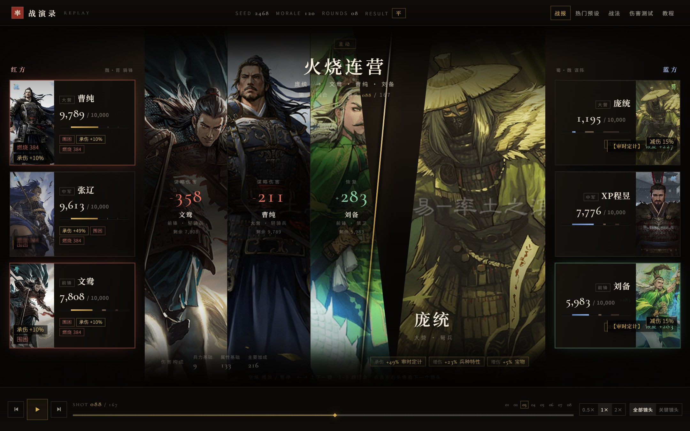

Playback cut · 1680 × 960提案 04 · 本轮重做
战演录播片
Playback
把中间那块留白换成一块胶片：一镜一个施法者、一组目标、一次结算。受击目标的脸与这一下的伤害、这一次的增减伤同框；恢复与增益则直接浮在左右头像上，一行行往上飘、变淡。
双联画逐镜播片浮动战斗文字增减伤同比
- 版面
- 左右斜切双联画（施法者｜目标，蓝方施法时自动镜像）· 左右各三张兵力卡 · 顶部技能抬头 · 底部伤害构成与增减伤来源
- 字体
- Cormorant Garamond数字Noto Serif SC战法与武将名
- 色彩
- 底 #080706 · 金 #d3aa4c · 受伤 #e2705c · 恢复 #8ad0a6 · 增益 #e7c76d
- 交互
- 空格播放 · ← → 单镜 · 1–8 跳回合 · 点将跳该将下一镜 · 全部/关键镜头 · 0.5–2× 变速